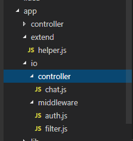

$ npm i egg-socket.io --save
开启插件：config/plugin.js
exports.io = {
enable: true,
package: 'egg-socket.io',
};
配置插件config/config.default.js
/ 和 new2 属于不同的命名空间 即如果你有两个业务用到了socket，可以分别用不同的命名空间去管理，如果只用到一个写一个及可
exports.io = {
init: { }, // passed to engine.io
namespace: {
'/': {
connectionMiddleware: [],
packetMiddleware: [],
},
'/news': {
connectionMiddleware: [],
packetMiddleware: [],
},
},
};
router\io.js 路由可以分别为不同的命名空间配置路由
io.of('/').route('chat', io.controller.chat.index);
io.of('/').route('message', io.controller.chat.message);
io.of('/').route('user', io.controller.chat.online);
io.of('/news').route('news', io.controller.news.index);
在生产环境下Nginx 配置
location / {
proxy_set_header Upgrade $http_upgrade;
proxy_set_header Connection "upgrade";
proxy_set_header X-Forwarded-For $proxy_add_x_forwarded_for;
proxy_set_header Host $host;
proxy_pass http://127.0.0.1:7001;
# http://nginx.org/en/docs/http/ngx_http_proxy_module.html#proxy_bind
# proxy_bind $remote_addr transparent;
}
chat
├── app
│ ├── extend
│ │ └── helper.js
│ ├── io
│ │ ├── controller
│ │ │ └── default.js
│ │ └── middleware
│ │ ├── connection.js
│ │ └── packet.js
│ └── router.js
├── config
└── package.json对应的文件都在io下
app/io

配置socket的中间件在 app/io/middleware 下 新建auth.js
在每一个客户端连接或者退出时发生作用，故而我们通常在这一步进行授权认证，对认证失败的客户端做出相应的处理
/**
* Created by bear on 2018/2/12.
*/
const PREFIX = 'room'; //定义房间号
module.exports = app => {
return async (ctx, next) => {
const { app, socket, logger, helper } = ctx;
const id = socket.id;
const nsp = app.io.of('/');
const query = socket.handshake.query;
// 用户信息
const { room, userId } = query; //获取socket链接传过来的参数
const rooms = [ room ];
console.log(room, userId);
const tick = (id, msg) => {
logger.debug('#tick', id, msg);
// 踢出用户前发送消息
socket.emit(id, helper.parseMsg('deny', msg));
// 调用 adapter 方法踢出用户，客户端触发 disconnect 事件
nsp.adapter.remoteDisconnect(id, true, err => {
logger.error(err);
});
};
// 检查房间是否存在，不存在则踢出用户
// 备注：此处 app.redis 与插件无关，可用其他存储代替
const hasRoom = await app.redis.get(`${PREFIX}:${room}`);
console.log(hasRoom,`${PREFIX}:${room}`)
// if (!hasRoom) {
// tick(id, {
// type: 'deleted',
// message: 'deleted, room has been deleted.',
// });
// return;
// }
// 用户加入
logger.debug('#join', room);
socket.join(room);
// 在线列表
nsp.adapter.clients(rooms, (err, clients) => {
// 更新在线用户列表
nsp.to(room).emit('online', {
clients,
action: 'join',
target: 'participator',
message: `User(${id}) joined.`,
});
console.log(123,clients)
});
// socket.emit('connect', 'packet received!');
await next();
console.log('disconnect!');
};
};app/io/middleware/filter.js
module.exports = (app) => {
return async (ctx, next) => {
// console.log(ctx.packet);
await next();
// console.log('packet response!');
};
};const tick = (id, msg) => {
logger.debug('#tick', id, msg);
socket.emit(id, msg);
app.io.of('/').adapter.remoteDisconnect(id, true, err => {
logger.error(err);
});
};
app/io/controller/chat.js
/**
* Created by bear on 2018/2/12.
*/
module.exports = app => {
class chatController extends app.Controller {
async index() {
this.ctx.socket.emit('res', 'test');
}
async message() { //方法通过 客户端 this.emit（'message',{}）//触发
this.ctx.socket.emit('message', 'test');
const params = this.ctx.args[0];
// this.ctx.service.message.sendPeerMessage(params);
console.log(2,params);
}
async online() {// modelMessage.sendOfflineMessage(socket, data.userId);
}
}
return chatController;
};